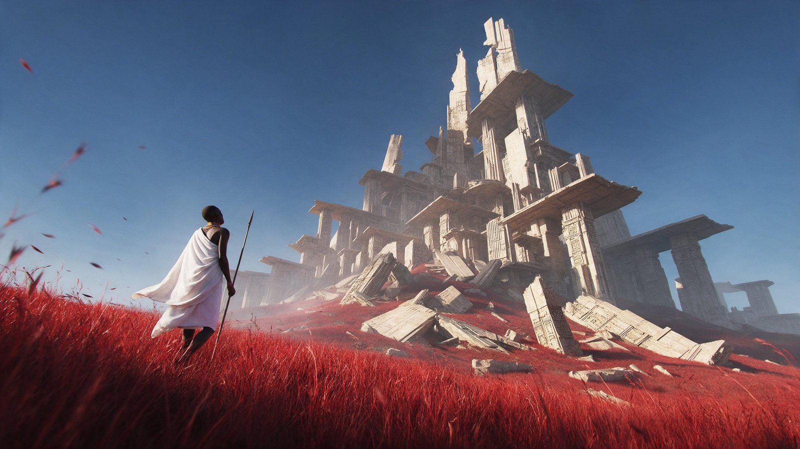

Ancient African Fantasy
A white-robed figure walks through a forest of towering carved wooden totem pillars on blue-lit sand.
| Creator | Travis Davids @MrDavids1 |
|---|---|
| Platform | X |
| Model | Seedream 5.0 Pro |
| Likes | 30 |
| Posted | 2026-10-18 |
| Visual style | Cinematic realism |
| Regional vibe | Other regions |
| Genre | Fantasy / myth Historical / period |
| Mood | Epic |
The creator has not published the prompt.